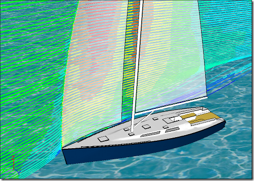
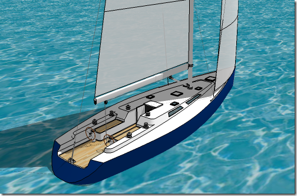
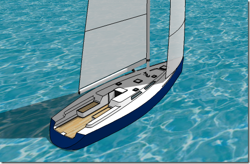
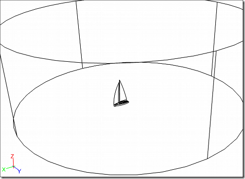
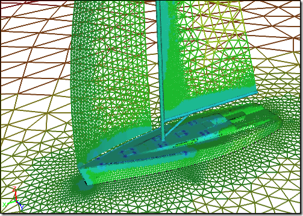
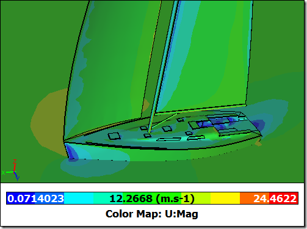
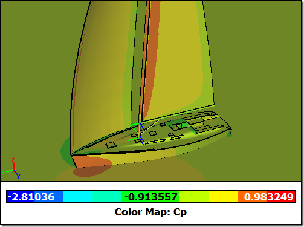

CFD Analysis of a Sail Yacht from SketchUp
A sail yacht is a great example of an aerodynamic vehicle that relies totally on the wind for propulsion. And you guessed it, where there's aerodynamics there's also an opportunity for Computational Fluid Dynamics (CFD) to make an impact. CFD has been a primary tool in the aerodynamic optimization of many recent sail yachts. This is especially true in competitive sail yacht design, such as the yachts that compete for the America's Cup. If your budget doesn't extend to the scale of Larry Ellison's then fear not, you can still benefit from CFD analysis of your yacht design in combination with Google SketchUp and Caedium Professional.
Streamlines Around a Sail Yacht
Model Preparation in SketchUp
The original model (Baltic 50 yacht) for this analysis came from the Google 3D warehouse.
Original SketchUp Yacht Model
Often SketchUp models have extraneous details (e.g., yacht rigging - wires and pulleys) that are irrelevant for a CFD analysis and can often complicate the meshing process without resulting in incremental improvement in the final CFD results. Also SketchUp models often omit key intersections (e.g., the intersection between the yacht and the sea surface - the water line). Using SketchUp it is relatively easy to delete features and add missing intersections for a well-constructed model such as this yacht.
Simplified SketchUp Yacht Model
Model Building in Caedium
After importing the COLLADA (.dae) file (exported from SketchUp) into Caedium it became clear that the main mast had inconsistent geometry. There are often problems with COLLADA import due to the imprecise nature of faceted geometry. In Caedium it was easy to construct new geometry for the mast and also the distant outer boundary (a cylinder) using Caedium's (analytic) geometry tools. Then using the hybrid topology-based tools that can mix and match geometry types (faceted and analytic) the final flow volume was stitched together from the model faces.
Complete Caedium Flow Volume
Rather than represent the sails as having an extremely small thickness and wasting mesh cells trying to resolve them, they were modeled as zero-thickness (or double-sided) walls. Each side of the sail was assigned a separate wall boundary condition.
The final flow volume consisted of:
- 1 volume
- 164 faces
- 453 edges
- 318 vertices
CFD Simulation using Caedium RANS Flow
The fact that the flow volume was a mixture of faceted and analytic geometry did not compromise the rest of the simulation process. It was then an easy task to define the physics (e.g., substance and boundary conditions), create the mesh, run the simulation and extract results.
Physics
The simulation was configured to model just the air flow around the yacht above the water line. The water surface was modeled as a moving wall.
- Water speed relative to the stationary yacht = 10 knots = 5.14 m/s
- True wind - relative to water
- Speed = 20 knots
- Direction = 30 degrees
- Apparent wind - relative to stationary yacht
- Speed = 29.09 knots = 15.38 m/s
- Direction = 20.1 degrees
- Velocity:X = 15.38 x cos (20.1) = 14.44 m/s
- Velocity:Y = 15.38 x sin (20.1) = 5.29 m/s
- Turbulence Model = K-Omega SST
Mesh
- 950,622 tetrahedral volume elements
- 69,412 triangular face elements
Yacht Surface Mesh
Results
Velocity Magnitude Surface Contours
Pressure Coefficient Surface Contours
Conclusion
You have seen how flexible Caedium can be in combining a faceted model with native geometry to perform a CFD analysis of a sail yacht. Special Caedium features that make this possible are the hybrid topology-based operations and double-sided walls. Now it's over to you to see whether you can design a sail yacht to compete with Larry's!
Feedback
Questions? Ideas? Problems?

Comments
Moving reference frame for ships
Hi Symscape,
I'm wondering if it is possible to move the ship with respect to the water instead of the ship being stationary and the water moving.
This is important for CFD of ships because the ship will (at the very minimum) translate vertically and pitch/trim.
As far as I can tell Caedium's MRP is only for rotating elements. Is this correct, or can the reference frame translate as required for CFD of ships?
No free movement
Caedium does not currently support general 6 degrees of movement.